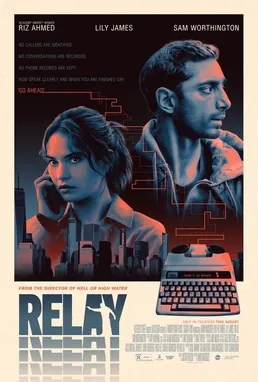

The genetics
Genetics enters through the whistleblowing scientist's story: Sarah Grant presents herself as a researcher at Cybo Sementis Research who has proof that the company concealed dangerous side effects of its genetically modified wheat, and the threat that this report could derail a billion-dollar merger drives much of the plot. The twist, however, reveals that Sarah is an operative working for another company, Optimo, to recover documents held by Ash; the sources do not make clear whether the wheat cover-up is real within the story or part of the ruse. Either way, the film draws on the familiar image of agribusiness corporations hiding the risks of genetically modified crops and silencing employees, without any scientific detail; its real subject is corporate wrongdoing and the guilt of silence.
How genetics is portrayed
- Overall portrayal of genetics
- negative Genetically modified crops are invoked as a dangerous product covered up by a corrupt corporation, in a film about corporate wrongdoing and whistleblowing.
- Outcome of the genetic intervention
- not applicable No genetic work is shown: the GM wheat and its side effects exist only as claims in a report that may be part of the operatives' ruse, according to the sources.
- Cybo Sementis Research
- villain Aim: commercial (negative). As presented in Sarah's story, the company produces genetically modified wheat, hides its dangerous side effects ahead of a billion-dollar merger and intimidates the employee who found out; the later twist leaves unclear whether this account is true.
The story
In New York, Ash is a fixer who brokers deals between corporations and would-be whistleblowers: they hand back incriminating documents in exchange for safety and money, while he keeps copies for protection. After closing such a deal for Hoffman, a former employee of the company Optimo, he takes on Sarah Grant, a research scientist at Cybo Sementis Research who says she stole a report proving the company covered up dangerous side effects of its genetically modified wheat, and now wants to return it to end a campaign of intimidation. Communicating only through a relay service for the deaf, Ash guides her across cities to evade a surveillance team led by Dawson and secures a payoff before a billion-dollar merger. When Sarah is apparently captured, Ash gives himself up, only to discover that Sarah is part of the team, sent by Optimo to recover Hoffman's documents from him. Ash escapes, the police arrest the team, and news breaks of Optimo's crimes.